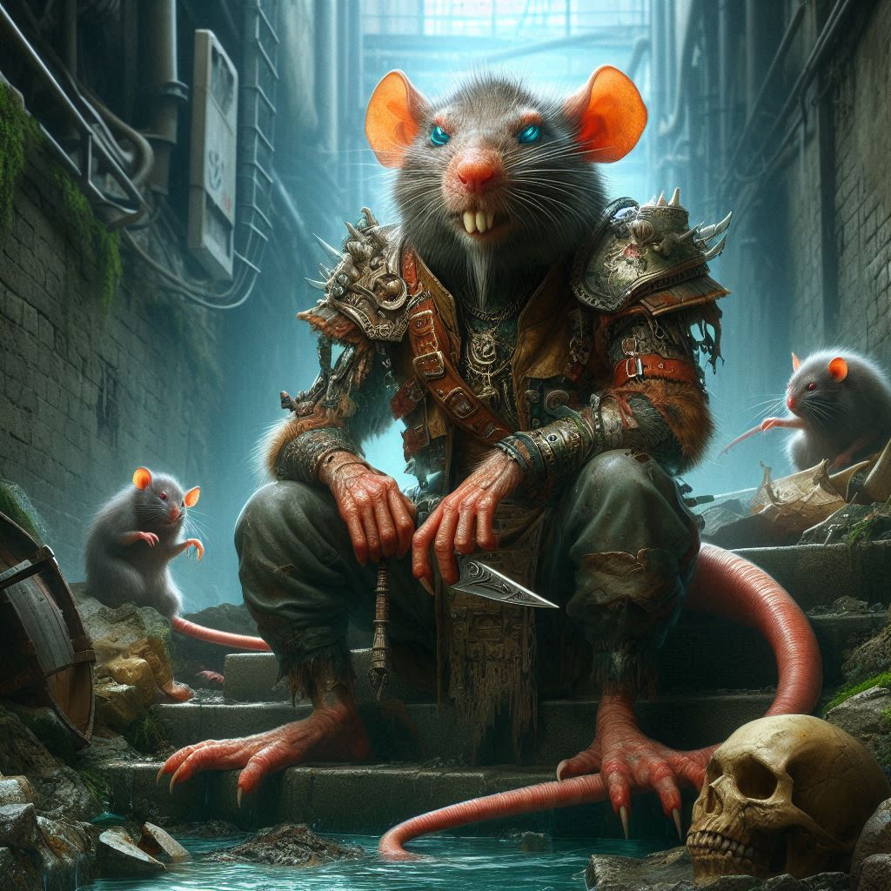

Shadows of Calverak
Menu ▼
Guards
Gnawbone Syndicate
Cinderhands
Veiled Mirror

Varnak Whispertooth
Rank: King Rat
Wererat leader of the Gnawbone Syndicate.
Abilities:
He can freely change between rat and human form.
His claws drip a deadly poison.
He can summon swarms of rats at will.